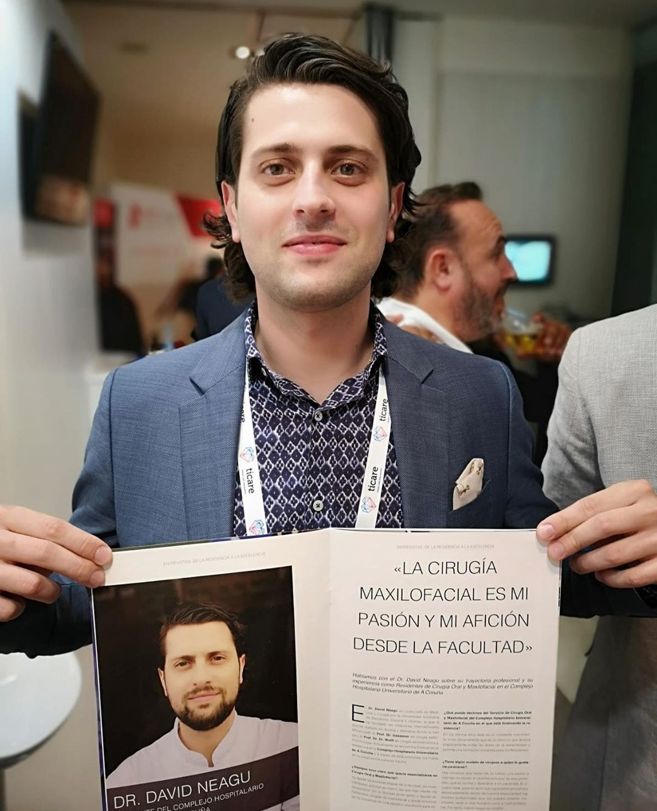

Dr.David Neagu
A young man who made his dream come true

Dr.David Neagu on annual congress of Spanish Society of Oral and
Maxilofacial Surgery
and Head and Neck
showing a magazin with his interview
Here's a time line of Dr.Neagu´s life:
- He start his study´s at the IES Quercus studying bachelor degree in his hometown Sant Joan de Vilatorrada
- After that he start his university career at Autonomous University of Barcelona and graduated the medicine and surgery degree
- At the end of his university career he moved at A Coruña an specialized in Maxilofacial surgery in University Hospital of A Coruña
- In 2018 has specialized in Facial Plastic surgery with prof.dr.Gassner in Regensburg,Germany
- Two months later has specialized in Craneofacial Reconstructive Surgery with prof.dr.dr.Wolff in Munchen,Germany
- In 2019 came to Barcelona and specialized in Orthognathic Surgery with prof.Frederico Hernandez Alfaro
- Next month he made a trip to india to specialized in Craneofacial Surgery with dr.Gosla Reddy in GSR Institute of Hyderabad
- At the end of 2019 did another training in Orthognathic Surgery with dr.Simonas Grybauskas in Vilnus,Lituania
- In 2020 he specialized in Facial Rejuvenation in New York with dr.Andrew Jacono and in Rhinoplasty in Leon,Spain with dr.Pablo Casas
- Actually works in Universty Hospital Parc Tauli as a Maxilofacial surgeon and collaborate as a freelance with others clinics
His motto is "N ai tu treaba!"(Its not your bussines!)
Dr.David
Neagu